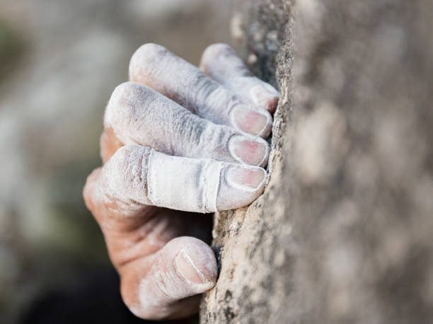
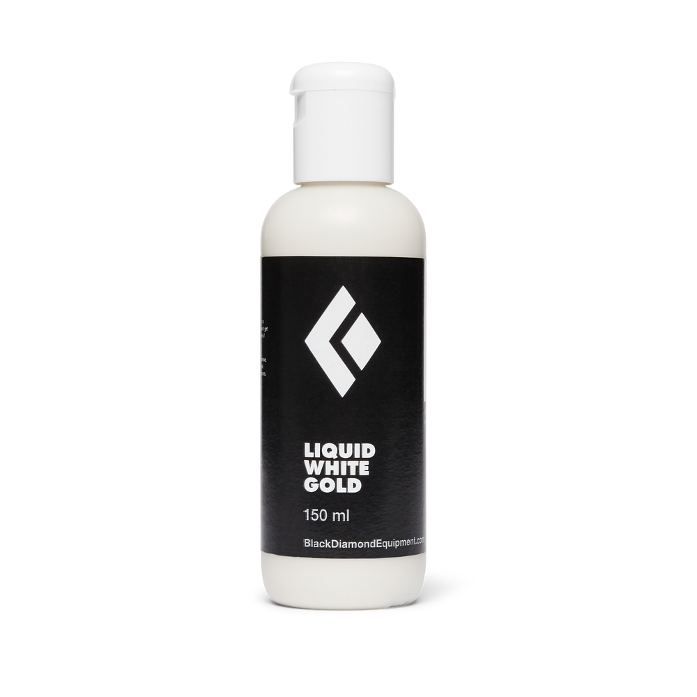
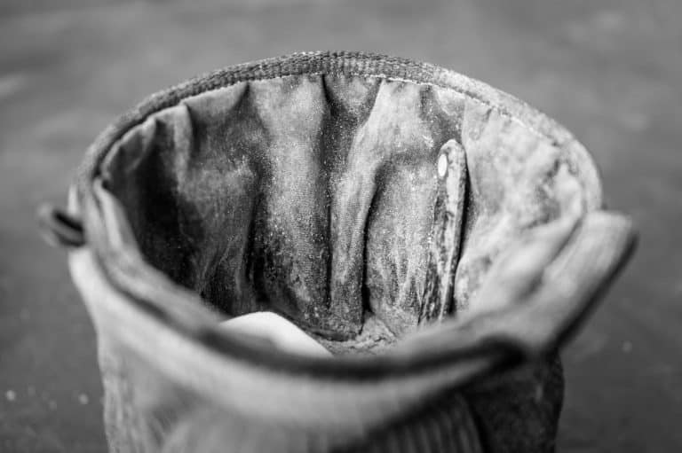

1 / 3

The kinds of chalk
Chalk is one of the first things that a budding climber needs to invest in. There are a few different types
of climbing chalk. There's liquid, loose (Also called dry), block, and cream chalk. But first, why use chalk anyway?
Chalk helps dry a climber's hands so as to assist with grip. The drier one's hands, the better they grip.
It's like tyres, in a way. A car can have 1,000 horsepower, but it will still be slow if its tyres aren't
able to transmit that power. In the same way, a climber's grip can be very strong, but that doesn't mean a
whole lot if their hands are sweaty halfway through their 5.11 climb!
2 / 3

Liquid and cream
Let's start off with the up-and-coming chalk types: liquid and cream. Liquid and cream chalks are almost
interchangeable, seing as they're both liquid. The difference there is that cream chalks contain a
moisturizing agent, whereas liquid chalks do not; the only liquifying agent is isopropyl alcohol. When
applying liquid or cream chalks, the climber simply squirts some of the liquid into their hand, then rubs
it around and waits for it to dry. Sometimes you'll see a climber who just put on some liquid chalk
waving their hands around to help dry the chalk quicker.
3 / 3

Dry chalks
Now on to the dry forms of chalk. In this category, we find loose and block chalks. As their respective
names imply, these chalks come either in a powder or in small bricks. Some may find these forms harder to
work with, and others may prefer them. Many climbing gyms have, since the pandemic, banned use of these
dry chalks in favor of the liquid chalk, due to the slight disinfecting properties of the latter. Sometimes
you'll see a small fabric sack that holds chalk and goes inside a chalk bag, which is called a chalk ball.
This is what is sometimes referred to as ball chalk.
❮
❯